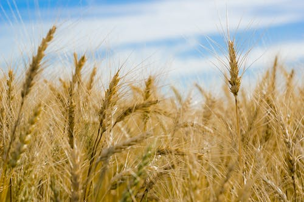
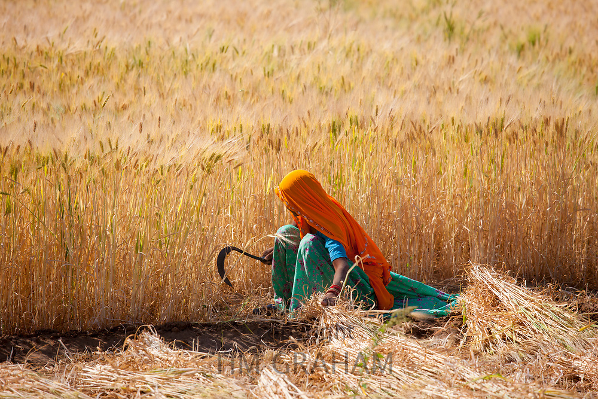

Wheat Cultivation and Properties


Soil Properties for Wheat Cultivation
- Wheat grows best in loamy or sandy loam soil with good drainage and adequate moisture retention
capacity.
- The soil should have a pH between 6.0 and 7.5.
- The ideal soil depth for wheat cultivation is 30-35 cm.
- The soil should be rich in organic matter to provide essential nutrients to the plants.
Cultivation Process
- Wheat cultivation begins with seed selection and soil preparation.
- The seeds are sown in rows or broadcasted in the field using seed drills or broadcast seeders.
- The ideal time for sowing wheat is between November and December in India.
- The plants require regular watering and fertilization for optimum growth.
- Wheat is usually harvested in late April or early May.
Properties of Wheat
- Wheat is a good source of carbohydrates, protein, and fiber.
- It contains important vitamins and minerals, including B vitamins and iron.
- Wheat is used to make a variety of food products, such as bread, pasta, and cereal.
- It is a staple food crop in many parts of the world.
Ideal Soil Moisture for Best Production of Wheat
- The ideal soil moisture for wheat cultivation is between 60-80% of field capacity.
- If the soil is too dry, it can cause the plants to wilt and reduce the yield.
- If the soil is too wet, it can lead to waterlogging and damage the roots of the plants.
- Proper irrigation and drainage management are essential for maintaining the ideal soil moisture for
wheat
cultivation.